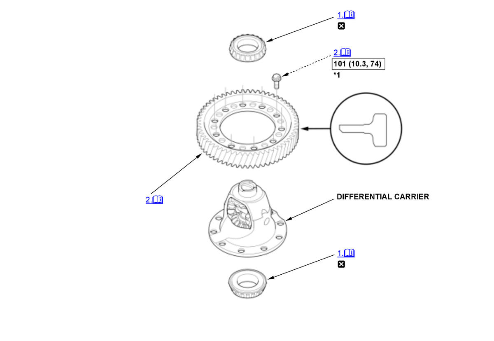

CVT Differential Carrier Disassembly and Reassembly (K20C2 (CVT)): Reassembly: Procedure
NOTE:
Numbered call-outs in figure pertain to list numbers in following procedure.
Fig 1: Exploded View Of CVT Differential Carrier Components With Torque Specifications For Reassembly (K20C2 - CVT)

Courtesy of HONDA, U.S.A., INC. |
Detailed information, notes and precautions |
 |
Torque: N.m (kgf.m, lbf.ft) |
 |
Replace |
| *1 | Left-hand threads |